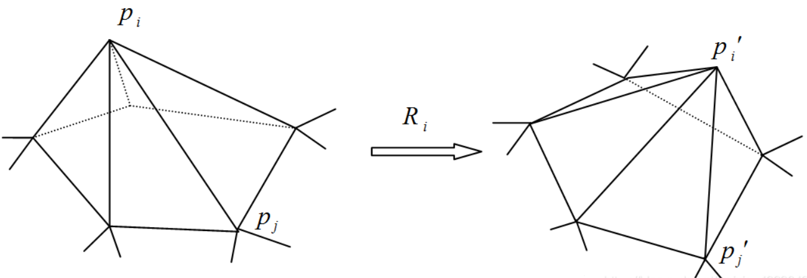

3D Construction
经典算法
ICP
迭代最近点算法（Iterative Closest Point, ICP）是一种点云配准算法，用来求解两堆点云之间的变换关系：旋转关系 $R$ 和平移关系 $t$。
基本思路：找到两组点云集合中距离最近的点对，根据估计的变换关系（$R$ 和 $t$）来计算距离最近点对经过变换之后的误差，经过不断的迭代直至误差小于某一阈值或者达到迭代次数来确定最终的变换关系。
数学描述：给定两个点云集合：$$X=(x_1,…,x_n)$$ $$P=(p_1,…,p_m)$$ 求解$R$和$t$，能量最小化:
$$E(R, t)=\frac{1}{n}\sum^n_{i=1}||x_i-(Rp_i+t)||^2$$求解方法
I. 已知对应点的情况- 计算两组点云质心: $$u_x=\frac{1}{n}\sum^n_{i=1}||x_i||^2$$ $$u_p=\frac{1}{m}\sum^m_{i=1}||p_i||^2$$
- 计算两组点云中的点以质心为原点的坐标: $$X’=(x_i-u_x)=(x_i’)$$ $$P’=(p_i-u_p)=(p_i’)$$
- 计算 $w$ 并对其进行SVD分解: $$w=\frac{1}{n}\sum^n_{i=1}x_i’p_i^T=U diag(\delta_1, \delta_2, \delta_3)V^T$$
- ICP算法的解为：$R=VU^T, t=u_x-Ru_p$
1
2
3
4
5
6
7
8
9
10
11import numpy as np
def icp(X, P):
u_x = np.mean(X, axis=0)
u_p = np.mean(P, axis=0)
H = (X - u_x).transpose() @ (P - u_p)
U, S, Vt = np.linalg.svd(H)
R = np.dot(Vt.T, U.T)
t = u_x - R @ u_p
return R, t
R, t = icp(X, P)
X_trans = np.dot(X, R.transpose()) + t - X
II. 未知对应点的情况
- 寻找两组点云中距离最近的点对
- 根据找到的距离最近点对求解两组点云之间的位姿关系
- 根据求解的位姿关系对点云进行变换，并计算误差
- 若误差没有达到要求，则重复1-3步直至误差满足要求或达到最大迭代次数
参考: ICP算法
ARAP
尽可能刚性变形算法（As Rigid As Possible, ARAP）要求模型变形前后保持局部细节不变，即只进行平移或旋转的刚体变形，形状不会发生扭曲。
- 数学描述：设 $C$ 至 $C’$为刚体变换，其变形过程中存在旋转矩阵 $R$: $$p_i’-p_j’=R_i(p_i-p_j), \forall j\in N(i)$$ 其中 $N(i)$ 表示顶点的1邻域点的索引，$p_j$ 和$p_j'$ 分别表示 $p_i$ 和 $p_i'$ 的1邻域顶点， $R_i$ 表示 $C_i$ 到 $C_i'$ 的最优旋转矩阵，最小化以下能量函数实现模型的尽可能刚性变形： $$E(C_i, C_i')=\sum_{j\in N(i)}w_{ij}||p_i'-p_j'-R_i(p_i-p_j)||^2$$ 其中 $e$ 表示顶点之间的边，$w$ 表示其边上的权重
- 求解方法：
- R为变量，则不包含 $R$ 的部分可理解为常数，由此可得：
$$E(C_i, C_i’)=\sum_jw_{ij}(e_{ij}’-R_ie_{ij})^T(e_{ij}’-R_ie_{ij})=argmax_{R_i} Tr(R_i\sum_jw_{ij}e_{ij}e_{ij}’)$$ - 协方差矩阵并进行SVD，根据中间变形结果 $P’$ 和初始模型坐标 $P$ 使用奇异值分解估算出变形单元的最优旋转矩阵 $R_i$ :
$$\sum_{j\in N(i)}w_{ij}e_{ij}e_{ij}’=P_iD_iP_i’^T=U_i\sum_iV_i^T$$ - 在旋转矩阵已知的情况下令能量函数导数为0可得到函数取最小值时的 $P’$ ，下一次迭代将 $P’$ 作为已知求解 $R_i$， 迭代直至能量误差小于指定阈值
$$\sum_{j\in N(i)}w_{ij}(p_i’-p_j’)=\sum_{j\in N(i)}\frac{w_{ij}}{2}(R_i+R_j)(p_i-p_j)$$
- R为变量，则不包含 $R$ 的部分可理解为常数，由此可得：
参考：
Marching Cubes
Marching Cubes算法是三维离散数据场中提取等值面的经典算法。
- 基本假设：沿六面体边的数据场呈连续性变化。即如果一条边的两个顶点分别大于或小于等值面的值，则在该条边上有且仅有一点是这条边与等值面的交点。
- 基本思想：逐个处理数据场中的立方体（体素），分离出与等值面相交的立方体，采用插值计算出等值面与立方体边的交点。根据立方体每一顶点与等值面的相对位置，将等值面与立方体边的交点按一定方式连接生成等值面，作为等值面在该立方体内的一个逼近表示。即用许多小正方体去对空间进行切分，用小正方体内部的平面来近似表示当前的等值面。小正方体的数量越多逼近效果越好但计算代价越大。
- 实现步骤：
- 将原始数据经过预处理之后读入指定的数组中
- 从网格数据体中提取一个单元体成为当前单元体，同时获取该单元体的所有信息如8个顶点的值、坐标位置等
- 将当前单元体8个顶点的函数值与给定等值面值C进行比较得到该单元体的状态表(edgeTable、triTable)
- 根据当前单元体的状态表索引找出与等值面相交的单元体棱边，并采用线性插值的方法计算出各个交点的位置坐标
- 利用中心差分法求出当前单元体8个顶点的法向量，再采用线性插值的方法得到三角面片各个顶点的法向量
- 根据各个三角面片顶点的坐标、顶点法向量进行等值面图象的绘制
参考:
TSDF
基于截断的带符号距离函数（Truncated Signed Distance Function, TSDF）是一种计算隐势面的方法。通过求每个体素的值，再使用Marching Cube来提取等势面。在拥有大内存的显卡并行计算的情况下，使用TSDF可以做到实时的重建效果。
- 实现步骤：
- 准备工作
建立一个大的Volume能够完全包围要重建的物体，划分网格体素，体素的大小取决于Volume的大小和划分体素的数目。将整个空间的体素全部存入GPU运算，每个线程处理一条$(x,y)$。即对于$(x,y,z)$的晶格坐标，每个GPU进程扫描处理一个$(x,y)$坐标下的晶格柱。对于构造的立体中的每个体素转化为世界坐标系下的三维位置点 $p$。 - 计算当前帧的TSDF值以及权重
遍历所有体素，以一个体素在世界坐标系三维位置点 $p$ 为例，由深度数据的相机位姿矩阵求世界坐标系下点 $p$ 在相机坐标系下得映射点 $v$ 。并由相机内参矩阵反投影 $v$ 点求深度图像中的对应像素点 $x$ ，像素点 $x$ 的深度值为$value(x)$，点 $v$ 到相机坐标原点的距离为$distance(v)$。引入截断距离计算$tsdf(p)$, 限制大小在$[-1,1]$之间：
$$sdf(p)=value(x)-distance(v)$$
$$tsdf_i(x)=max(-1, min(1, \frac{sdf_i(x)}{t}))$$ - 当前帧与全局融合结果进行融合
如果当前帧是第一帧，则第一帧即是融合结果，否则需要当前帧与之前的融合结果进行融合。$TSDF_i(p)$为体素 $p$ 的融合$TSDF$值，$W_i(p)$ 为融合权重值，$tsdf_i(p)$为体素 $p$ 当前帧的$TSDF$值，$w_i(p)$为当前帧权重值，$θ$ 为投影光线与表面法向量的夹角。
$$TSDF_i(p)=\frac{W_i(p)TSDF_{i-1}(p)+w_i(p)tsdf_i(p)}{W_{i-1}(p)+w_i(p)}$$
$$W_i(p)=W_{i-1}(p)+w_i(p), w_i(p)=\frac{cos(θ)}{distance(v)}$$ - 每添加一帧深度数据，执行一遍2,3步的计算，直到最后输出结果给Marching Cube计算提取等势面
- 准备工作
参考：
All articles in this blog are licensed under CC BY-NC-SA 4.0 unless stating additionally.
Related Articles


Comment